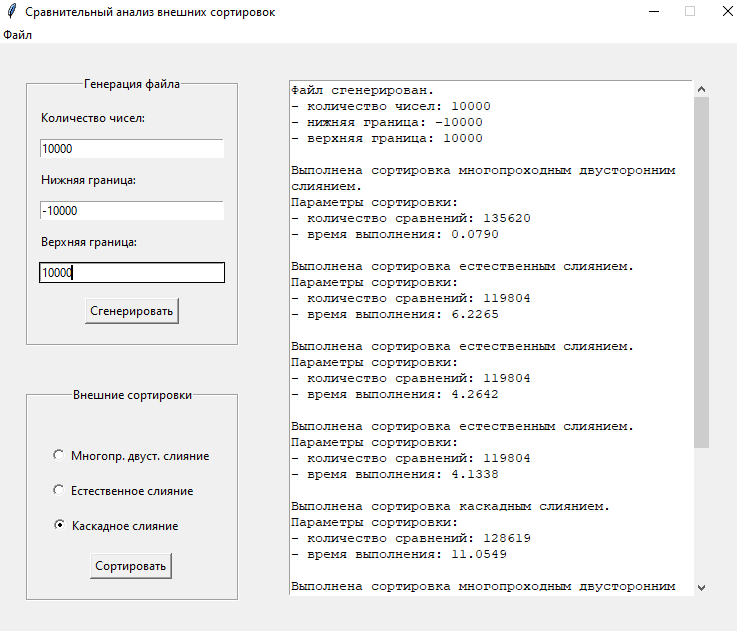

Описание программы
Программа предназначена для сравнительного анализа алгоритмов внешней сортировки. Пользователь задаёт количество чисел и границы генерации, после чего выполняется сортировка выбранным методом.
Результаты
| Метод | Количество сравнений | Время выполнения в секундах |
|---|---|---|
| Многопроходное двустороннее слияние | 135620 | 0.079 |
| Естественное слияние | 119804 | 4.26 |
| Каскадное слияние | 128619 | 11.05 |
Вывод
Наиболее эффективным по времени оказался метод многопроходного двустороннего слияния. Однако метод естественного слияния показал меньшее количество сравнений.